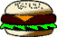

MOMENTUM and COLLISIONS

"What one man can invent
another can discover"
Arthur Conan Doyle

where we have assumed that the mass of the
particle is independent of time and we define the momentum
of the particle, p = mv.
Momentum
is
a
clearly a vector quantity, with units, kg.m/s (SI) or slug.ft/s
(British).
 Note that writing the 2nd law as
force equal to the rate of change of momentum is the form in
which
Note that writing the 2nd law as
force equal to the rate of change of momentum is the form in
which
- For a system of
particles we have just seen that . This expression can be written
where P is the vector sum of all the
individual particle momenta in
the system.
- Suppose now that Fext = 0, that is
there are no external forces acting on the
system. In this case, which means that P
is constant.
- Conservation of
Momentum
Important
basic
principle of Science
 "Total momentum of
a system remains constant,
"Total momentum of
a system remains constant,
when the net external force acting on the system is
zero"
 Within the system objects may collide with each
other, thus exerting forces on each other. However,
Within the system objects may collide with each
other, thus exerting forces on each other. However,
"Total
momentum
of
system before collision = Total momentum of system after
collision"

Note
that
since momentum is a vector quantity, this equation is actually
three scalar equations, one for momentum along each of the
three Cartesian axes, x,y,z.
 The condition that the net external force
on the system be zero appears to make momentum conservation
less basic that energy conservation (since there is no such
condition for energy). However, if we define the
Universe as our system, then all forces are internal and
universal momentum conservation is guaranteed.
The condition that the net external force
on the system be zero appears to make momentum conservation
less basic that energy conservation (since there is no such
condition for energy). However, if we define the
Universe as our system, then all forces are internal and
universal momentum conservation is guaranteed.
- Choose
the system such that there are external forces only in the
y direction; then momentum is conserved in x and z (e.g.
billiard ball collisions).
- Choose the system such that the external force is much smaller than
the internal forces involved during a collision. In
this case momentum will not be exactly
conserved, but applying momentum conservation will be a
good approximation.
- Application of
Momentum Conservation to Collisions
Given
that
we
can assume momentum is conserved there are two classes of
collisions
o
ELASTIC: Kinetic
energy is conserved, KEinitial
= KEfinal
o
INELASTIC: Kinetic energy is not conserved.
§
If the maximum kinetic energy is lost, consistent with
momentum conservation, the collision is called Completely Inelastic. This
situation can be achieved when two objects stick together
after colliding.
§
In inelastic collisions the “lost” kinetic energy is
converted into some other form of energy – heat, sound,
elastic etc.
§
The total energy in a system is always conserved, but in collisions we
are usually only able to easily measure kinetic energies,
which means we can apply (kinetic)
energy conservation only to elastic collisions.
 Remember, momentum
is a vector quantity. Thus, in
three dimensions, application of conservation of momentum will
lead to 3 equations relating the components of momentum before
and after a collision.
Remember, momentum
is a vector quantity. Thus, in
three dimensions, application of conservation of momentum will
lead to 3 equations relating the components of momentum before
and after a collision.
Momentum conservation video
example
and another one from Bill Nye
- Impulse
and Collisions
Using
the
alternative
formulation of the second law, , we can write
The
impulse
is defined here for a single object, during a 2 body collision
the impulse on the first object will be equal and opposite to that on the second.
Consideration of the impulse is most useful when the
force during a collision is not constant.
-  Food
for thought…
- We have seen that velocity is
“relative”, the value assigned
to a particle depends on the reference frame of the
observer. Therefore, momentum
(and kinetic energy) is also dependent on the observer’s
reference frame. Different
observers of the same system may measure different values
for P and pi, but due to
momentum conservation each will find his/her value of the
total momentum unchanged.
- Conservation of energy, momentum and
mass are extremely important in
describing nature. In the
realm of large velocities (approaching the speed of light)
Newtonian mechanics is no longer valid – we must use
Einstein’s
theory
of
Relativity To describe the interactions of
matter at very small distances we must use the theory of Quantum
Mechanics. However,
energy, momentum and mass conservation remain valid under
Relativity
and Quantum
Mechanics. These
conservation laws are certainly more fundamental than

"To mark the opening of a sports hall for juvenile offenders
the Prime Minister up rooted a tree."
Ronnie Barker

Dr. C. L. Davis
Physics Department
University of
email: c.l.davis@louisville.edu